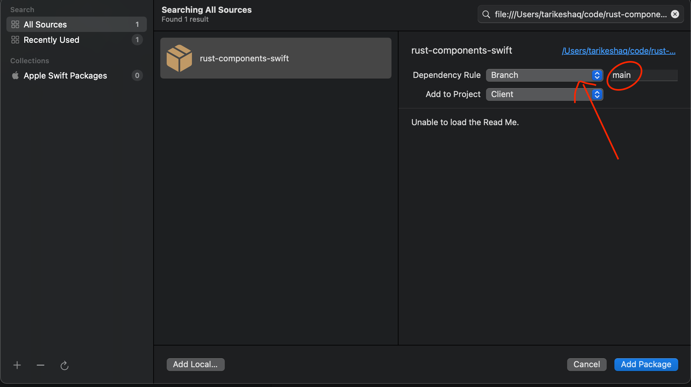

How to locally test Swift Package Manager components on Firefox iOS
This is a guide on testing the Swift Package Manager component locally against a local build of Firefox iOS. For more information on our Swift Package Manager design, read the ADR that introduced it
This guide assumes the component you want to test is already distributed with the
rust-components-swiftrepository, you can read the guide for adding a new component if you would like to distribute a new component.
The goal for this document is to be able to build a local firefox iOS against a local application-services. On a high level, that requires the following:
- Build an xcframework in a local checkout of
application-services - Include the xcframework in a local checkout of
rust-components-swift - Run the
generatescript inrust-components-swiftusing a local checkout ofapplication-services - Include the local checkout of
rust-components-swiftinfirefox-ios
Prerequisites:
- A local checkout of
firefox-iosthat is ready to build - A local checkout of
rust-components-swift - A local checkout of
application-servicesthat is ready to build for iOS
Using the automated flow
For convenience, there is a script that will do all the necessary steps to configure your local firefox-ios build with a local application-services repository. You do not need to do the manual steps if you follow those steps.
-
Run the following to execute the script, the example below assumes all of
firefox-ios,rust-components-swiftandapplication-servicesare in the same directory. Adjust the paths according to where they are on your filesystem.$ cd firefox-ios # This is your local checkout of firefox-ios $ ./rust_components_local.sh -a ../application-services ../rust-components-swift -
Using Xcode, open
Client.xcodeprojinfirefox-ios -
Then, make sure to reset packages cache in Xcode. This forces Xcode to remove any previously cached versions of the Rust components.
- You can reset package caches by going to
File -> Packages -> Reset Package Caches
- You can reset package caches by going to
-
If this is not the first time you run the script, make sure to also update package versions. This forces Xcode to pull the latest changes in the
rust-components-swiftbranch.- You can update package versions by going to
File -> Packages -> Update To Latest Package Versions - If this step fails, it's possible that the
Reset Package Cachesstep above left some cruft behind. You can force this step by manually removing~/Library/Caches/org.swift.swiftpmand~/Library/Developer/Xcode/DerivedData/Client-{some-long-string}
- You can update package versions by going to
-
Once the above steps are done, attempt building firefox ios. If you face problems, feel free to contact us
Disabling local development
The easiest way to disable local development is to simply revert any changes to firefox-ios/Client.xcodeproj/project.pbxproj.
However, if there are other changes to the file that you would like to preserve, you can use the same script. To use the same script, you will need to:
- Know what version of
rust-components-swiftwas used beforehand. You can find this by checking the git diff onfirefox-ios/Client.xcodeproj/project.pbxproj. - Run:
$ ./rust_components_local.sh --disable <VERSION> ../rust-components-swift - Then, make sure to reset packages cache in Xcode. This forces Xcode to remove any previously cached versions of the Rust components.
- You can reset package caches by going to
File -> Packages -> Reset Package Caches
- You can reset package caches by going to
If you happen to change branches in
rust-components-swift, you will need to disable then re-enable local development. The script is not currently smart enough to switch branches. Alternatively, keep the branch inrust-components-swiftthe same.rust-components-swiftserves only as a release surface so there is little use to switching branches and pushing changes to it, unless you are changing something related to the release process.
Using the manual flow
It's important to note the automated flow runs through all the necessary steps in a script, so if possible use the script as it's a tedious manual process
However, if the script is failing or you would like to run the manual process for any other reason follow the following steps.
Building the xcframework
To build the xcframework do the following:
- In your local checkout of
application-services, navigate tomegazords/ios-rust/ - Run the
build-xcframework.shscript:
$ ./build-xcframework.sh
This will produce a file name MozillaRustComponents.xcframework.zip that contains the following, built for all our target iOS platforms.
- The compiled Rust code for all the crates listed in
Cargo.tomlas a static library - The C header files and Swift module maps for the components
Include the xcframework in a local checkout of rust-components-swift
After you generated the MozillaRustComponents.xcframework.zip in the previous step, do the following to include it in a local checkout of rust-components-swift. The file will be in the megazords/ios-rust directory.
- Unzip the
MozillaRustComponents.xcframework.zipinto therust-components-swiftrepository: (Assuming you are in the root of therust-components-swiftdirectory andapplication-servicesis a neighbor directory)unzip -o ../application-services/megazords/ios-rust/MozillaRustComponents.xcframework.zip -d . - Change the
Package.swift's reference to the xcframework to point to the unzippedMozillaRustComponents.xcframeworkthat was created in the previous step. You can do this by uncommenting the following line:
and commenting out the following lines:path: "./MozillaRustComponents.xcframework"url: url, checksum: checksum,
Run the generation script with a local checkout of application services
For this step, run the following script from inside the rust-components-swift repository (assuming that application-services is a neighboring directory to rust-components-swift).
./generate.sh ../application-services
Once that is done, stage and commit the changes the script ran. Xcode can only pick up committed changes.
Include the local checkout of rust-components-swift in firefox-ios
This is the final step to include your local changes into firefox-ios. Do the following steps:
-
Open
Client.xcodeprojin Xcode -
Navigate to the Swift Packages in Xcode:

-
Remove the dependency on
rust-components-swiftas listed on Xcode, you can click the dependency then click the- -
Add a new swift package by clicking the
+:- On the top right, enter the full path to your
rust-components-swiftcheckout, preceded byfile://. If you don't know what that is, runpwdin while inrust-components-swift. For example:file:///Users/tarikeshaq/code/rust-components-swift - Change the branch to be the checked-out branch of rust-component-swift you have locally. This is what the dialog should look like: 
Note: If Xcode prevents you from adding the dependency to reference a local package, you will need to manually modify the
Client.xcodeproj/project.pbxprojand replace every occurrence ofhttps://github.com/mozilla/rust-components-swiftwith the full path to your local checkout.- Click
Add Package - Now include the packages you would like to include, choose
MozillaAppServices
- On the top right, enter the full path to your
-
Finally, attempt to build firefox-ios, and if all goes well it should launch with your code. If you face problems, feel free to contact us